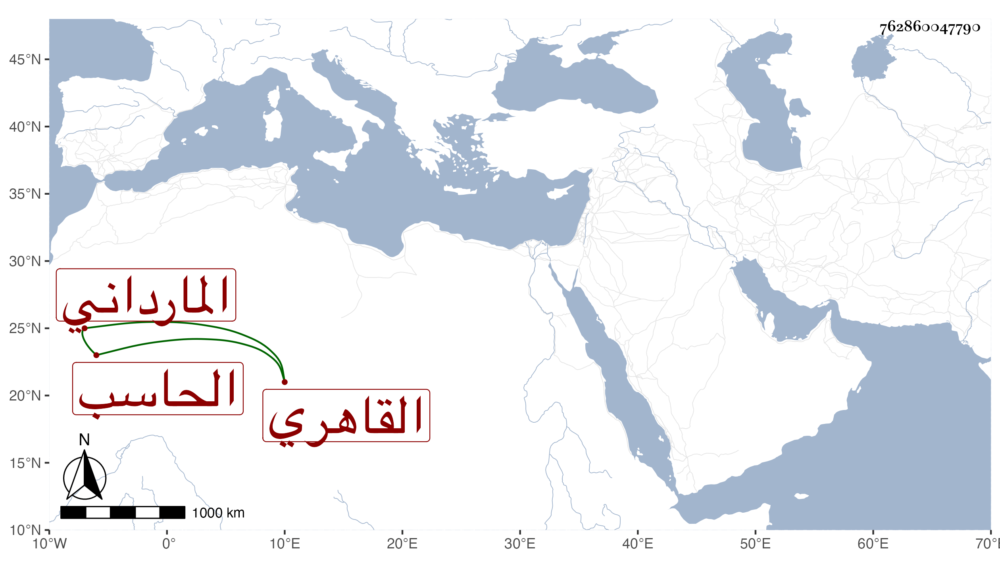

0902Sakhawi.DawLamic.ITO20230111-ara1.EIS1600.762860047790
Biography ID: 762860047790
65
عبد الله بن خليل بن يوسف بن عبد الله الجمال المارداني نسبة لجامع المارداني القاهري الحاسب . قال شيخنا في معجمه كان عارفا بالميقات والهيئة اجتمعت به وأخذت من فوائده وكان خيرا دينا ، وقال في إنبائه انتهت إليه رياسة علم الميقات في زمانه وكان عارفا بالهيئة مع الدين المتين وله أوضاع وتواليف وانتفع به أهل زمانه قال وكان أبوه من الطبالين ونشأ هو مع قراء الجوق ، وكان له صوت مطرب ثم مهر في الحساب وكان شيخ الخاصكي قد قدمه ونوه به . مات في جمادى الآخرة سنة تسع . قلت وممن أخذ عنه الفن ابن المجدي وغيره ممن لقيناه ، وذكره المقريزي في عقوده وقال إنه كان من محاسن أهل زمانه ذكاء وإتقانا لعلمه ورياضة خلق مع تواضع وإطراح للتكلف فرحمه الله ما كان أجمل عشرته وكان أبوه ممن يدق الطبلخاناه ونشأ هو مع قراء الأجواق وقد حفظ القرآن وكان له صوت شجي مطرب ثم أقبل على الميقات فمهر في الحساب وحل الزيج وترجمه .
